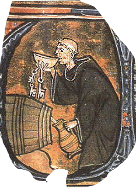
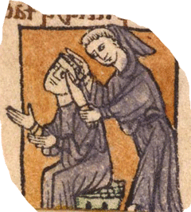
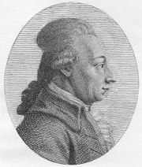
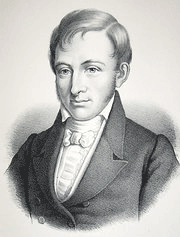

Введение в романо-германскую филологию
| лекция 1 | лекция 7 | лекция 8 |
| лекция 2 | лекция 9 | |
| лекция 3 | лекция 10 | |
| лекция 4 | лекция 11 | |
| лекция 5 | лекция 12 | |
| лекция 6 | лекция 13 |
ЛЕКЦИЯ 12:
Эпоха великих открытий РГФ
Как (если) вы уже заметили, всякое значительное изменение в рационе питания западных европейцев неизбежно сказывалось на их образе мысли.
В эпоху пшёнки (куркута) они согласны были считать себя орудиями воли Божьей; наевшись вареных бобов (лобушора), начали заводить университеты и оглядываться на то время, когда Бога ещё не было, а было много богов, от службы которым, при желании, можно и уклониться.
А до чего довела западную цивилизацию картошка?
С картошкой Европа докатилась до Реформации.
«Реформация» по-квиритски означает – переделка формы.
И чью же форму принялись переделывать накартофелившиеся европейцы? Форму церкви.
С сутью религии они не спорили – Бог оставался прежним, но вот формы сношения с Ним их уже не устраивали.
Почему это, если просишь Его о чём-либо, то непременно на латыни – ну, неужто ж Он по-людски не понимает? Да при Его вездесущности Он тебя должен слышать и в чистом поле, и в глухом лесу, не обязательно только в часовне.
Немало было претензий и к формам церковного правления.
Вобщем, пошёл разброд и шатания – на филологическом уровне реформисты обзывали папу римского ослиным членом, а на уровне политическом европейцы резали и жгли друг друга почём зря в безжалостных религиозных войнах.
Но углубляться слишком тут не будем – у нас иной предмет постижения и нам важнее уяснить что дала Реформация филологии.
А дала она ей новый предмет для изучения – древне-еврейский язык.
Подавляющее большинство составляющих Библию текстов—Ветхий Завет—написаны именно на этом языке. Католическая церковь для своих нужд пользовалась латинским переводом Ветхого Завета, реформистам же, для доказательства неправильносёи толкования Священого Писания служителями римско-католической церкви, следовало обратиться к первоисточнику, что они и сделали. Такое развитие событий довело до возникновения
б и б л е й с к о г о к р и т и ц и з м а – науки, которая занимается колупанием в вопросах насчёт текстовки, композиции и исторических декораций вокруг Старого и Нового Заветов.
История, как это часто с ней бывает, проделала виток и всё опять пошло по старому – филологи опять заколупались в двух книгах, поменялись лишь названия книг: вместо ИЛИАДА/ОДИССЕЯ стало СТАРЫЙ/НОВЫЙ ЗАВЕТ.
Но, конечно, за два тысячелетия затраченные историей на этот виток, инструменты колупания малость поменялись, навострилась логика, добавилось приёмов – колупали уже не только вдоль и поперек, но и по диагонали.
Вот почему всего одна наука – библейский критицизм – подразделяется на семь основных направлений:
- текстовой критицизм – его задача выяснять какой из сохранившихся текстов являлся оригиналом при списывании, а если все имеющиеся тексты – копии, то какая из них сделана самым добросовестным переписчиком?
- филологический критицизм – изучает библейские языки, уточняя граматику, словарный запас и стиль тех времен не только в древне-еврейском языке, но и вокруг него;
-
литературный критицизм – высматривает какие такие литературные жанры вштопаны в текст, дабы добыть улики насчёт даты составления текста и его авторства (сами ли евреи придумали, или пересказали шумерскую сказочку?), и он же ещё определяет для каких целей применялись по-первах разные творения, из тех что позже прификсированы были в Библию
Так, например, небезызвесная в определенных кругах Соломонова Песнь песней оказалась сборником народных частушек/шлягеров исполнявшихся по ходу празднования бракосочетания.
- традиционный критицизм – пытается проследить развитие устных преданий, предшествовавших писаным текстам;
- формальный критицизм – сортирует писаный материал по литературным формам: где тут притча, где тут гимн;
- исторический критицизм – проверяет взаправду ли имелись в указанное время упомянутые фараоны и столько ли лет длилось вавилонское пленение.
Список критицизмов ещё не исчерпан, но надеюсь, и перечисленных достаточно для составления представления о том, сколько наук можно выжать из пары книжек, если с умом подойти к ним.
Таким умным первопроходцем в библейском критицизме стал Ричард Бентли (1667-1742). Среди вышеприведённого набора критицизмов самым кровно-нашим является второе направление - критицизм филологический, по ходу которого—чтобы лучше рабираться с древне- (а ныне уже просто)-еврейским языком —изучены и расклассифицированы даже такие древне-семитские языки как Akkadian и Ugaritic, не говоря уже о двоюродном—через Исава—арабском языке.
Но не надо думать, будто филологию продвигало лишь воинствующее инакомыслие. На пользу ей шли также и внутренние распри католицизма.
Бенедектинцы—один из древнейших монашеских орденов—располагали, в силу своей почтенновозрастности, рядом некоторых привилегий, на которые завидно стало иезуитам—это орден из молодых, да ранний—и они начали подкапываться, интриговать; устроили, понимаешь, склоку...
Всё это вынудило бенедектинцев обратиться, в целях самообороны, к изучению палеографии, т.е. манеры древнего письма/старопись. Жан Мобильен (Jean Mabillion) (1632-1707) заложил основы латинской палеографии, как современной науки, а монах Бернард де Мануфакон (Bernard de Manufacon) (1655-1741) сделал то же самое для палеографии греческой.
Но все эти науки можно отнести к разряду побочных филологий, а основную её струю породил—и, тем самым, отцом современной филологии стал—Фридрих Август Вольф (02.15.1759-08.08.1824).
Это было жутко умное дитя. Ещё ребенком, маленький Фриц обучился греческому, латыни и французскому (у папаши, видать, хватало мошны на софистов). С таким багажом ему оставалась прямая дорожка – в университет, где он и преподавал с 1783 по 1806 классическую литературу (..?..). Университет этот находился в Halleи Вольф сумел там сделать из филологии отдельную отрасль знания и своими подстрекательски пламенными лекциями воспитал поколение дальнейших филологов.
Хотя авторство гомеровских поэм уже с древнейших времен подвергалось сомнениям, только лишь работа Вольфа Prolegomena ad Homerum (1795) так шарахнула учёных по мозгам, что напрочь вышибла из них предположение, будто слепой бард был единоличным производителем всё тех же непременных ИЛИАДЫ и ОДИССЕИ.
Однако, взять и зачеркнуть имя Гомера, которое за все истекшие столетия стало настолько домашним и близким, было жалко. Пошли на разумный компромис – договорились считать ИЛИАДУ евоной, а ОДИССЕЮ – продукцией группы анонимных авторов.
В одну и ту же эпоху с Вольфом жизнедеятельничал англичанин валлийского происхождения Вильям Джонс (09.28.1746-04.27.1794)
Четыре года (64-68 г.г.) проучился Билли в Оксфорде и освоил 4 языка – латынь, греческий, еврейский, арабский.
С таким набором инструментов вполне можно стать ассом в библейском критицизме, но нет – его потянуло на восток и он стал ориенталистом (..?..), изучил персидский и еще 23 языка, включая китайский.
В 71 г. он составил граматику персидского языка.
В 74 финансовое положение заставило перейти в юристы, но дела своего он не забросил и в 82-м он перевёл 7 до-арабских од Moallhat.
В следущем, 83-м, он был возведён в рыцари, стал величаться «сэр» и был отправлен в Калькутту (Индия на тот момент являлась колонией Англии, но уже в современном, а не в античном смысле слова «колония») на пост Председателя Верховного Суда этой жемчужины в короне британской империи.
В 84-м, пользуясь служебным положением, создал научную организацию – Бенгальское Азиатское Общество (БАО) и два года спустя выступил на заседании данного общества со сногсшибательным докладом, что при изучении очередного из 28 языков—Сансктита—ему бросилось в глаза до чего много у Санскрита сходных черт с персидским, а также с греческим и латинским языками, после чего он никак не может избавиться от мысли, что все помянутые языки вылупились из некоего предыдущего – пра-языка, и почему бы не считать их членами единой семьи индо-европейских языков?
Поди теперь угадай – чего они наелись в Западной Европе в конце 18 столетия, что так их потянуло к языкам, но Джонс был не единственный там полиглот.
Взять хотя бы датчанина Размуса Раска – за свою жизнь он овладел 25-ю языками и диалектами, а просто изучил – 50.
Да плюс к тому стал основателем такой науки как сравнительная филология/лингвистика.
Настаивать не стану—всяк волен строить свою гипотезу—но лично у меня сильное подозрение на сливочное масло – не иначе как оно подмазало их полиглотство.
Однако, по порядку...
Размус Раск (11.22.1787-11.14.1832), как уже говорилось, датчанин, в 1808 становится помощником библиотекаря копенгагенского университета.
В 1811 составляет граматику старо-норвежского—он же исландский—языка.
13-15 г.г. проводит в фольклорной экспедиции на острове Исландия, собирая сказки, тосты, саги, и попутно изучив эскимоский.
Сравнивая скандинавские языки с латынью и греческим, Раск первым указал, что кельтские языки – бретонский, валлийский, ирландский – принадлежат к предположенной Джонсом и принятой остальными филологами Индо-Европейской группе языков, но зато язык басков и финно-угорские в эту группу не вписываются.
В 17-м Раск издает англо-саксонскую граматику (Old English).
Год спустя – две (!) заглавные книги исландской литературы ЭДДА СТИХАМИ и ЭДДА ПРОЗОЙ – сборники викинговских саг.
Он установил связь между старо-норвежским, готским, литовским, старо-славянским, греческим и латинским и показал определённые закономерности того, как изменились согласные в германских языках, делая слова непохожими на такие же слова в прочих Индо-Европейских языках.
Например:
- English – father, acre
- Latin – pater, ager
или еще:
- Old German – liuti
- Russian – люди.
В 19-м Раск отправляется побродить по белу свету – заглянул в Стокгольм, Санкт-Петербург. Оттуда подался в Иран – собранные им персидские манускрипты и поныне остаются ценнейшим достоянием Дании.
В 20-м перебрался в Индию и на Цейлон, а в 23 вернулся домой с манускриптами на Pali и Singalese.
В 25-м он становится профессором истории литературы в копенгагенском университете и в 29-м—наконец-то!—дослуживается до должности университетского библиотекаря.
С 31-го преподает ориентальные языки. Из поздних работ следует отметить граматику испанского (24) и французского (25) языков.
Вот и всё, и скажут мне: что толку? Был, да сплыл. Со всеми своими пятью десятками изученых языков.
А я отвечу: всё верно вы говорите – таков расклад жизни человека, чтоб кончалась.
Но не это важно, а важно само течение жизни и то, как ты в ней барахтаешься.
Можно подымать штангу за титул чемпиона и большие деньги; можно составлять граматику языка, которым уже никто не говорит сотни лет.
Каждый выбирает что ему/ей приятнее – надо только учитывать, что услаждение одного человеческого органа происходит за счёт ограничения утех для прочих его органов. Важно определиться – какой из органов даёт тебе больше приятности.
Что касается штанги, то её ведь может и домкрат поднять, но никакому инструменту не постичь того, перед чем спасовал нетренированый человеческий ум.
И ещё отмечу нечто, о чём умалчивают учебники. Филологи – весьма ненасытные субъекты, они наращивают себе добавочный орган – ум, чтобы потом получать через него удовольствия не предусмотренные анатомией.
Убеждать не стану – моё дело маленькое – сказать, а вы уж решайте сами: иметь или не иметь.
ЗАДАНИЕ:
Что такое ощущение?
Какая между ними разница
(если таковая имеется)?